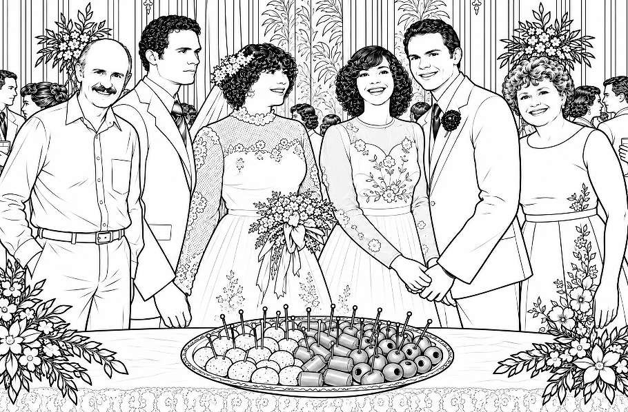

A História de Dona Zelinda e a Grande Festa de Casamento dos Filhos
Há festas que começam muito antes do dia marcado. Começam quando a família recebe a notícia, quando surgem os primeiros planos e quando alguém, geralmente uma mãe, percebe que será preciso colocar muita coisa em ordem para que tudo saia como deve ser. Os casamentos de Genivaldo e Márcia, de um lado, e de José Ailton e Wanda, de outro, foram assim: duas grandes celebrações que mobilizaram a família inteira.
Dona Zelinda não ficou esperando que as coisas acontecessem. “Arregaçou as mangas”, preparou os enfeites de flores e reuniu irmãos, cunhados e até alguns vizinhos para o trabalho na cozinha. Afinal, casamento de filho era acontecimento importante, e ela queria que tudo estivesse à altura da ocasião.
E decretou, sem margem para discussão:
— Casamento bonito tem que ter fartura, churrasco de primeira e a minha famosa batatinha curtida!
Três dias de trabalho e muita batatinha
Foram três dias inteiros de mutirão na cozinha. A mesa grande ficou tomada por bacias enormes, e cada pessoa encontrou alguma tarefa para fazer. Era preciso descascar quilos de batatinhas pirulito, picar azeitonas e cebolas, cortar as salsichas em rodelinhas e preparar o tempero que daria à conserva aquele sabor tão apreciado.
O trabalho era grande, mas havia muita gente para ajudar. Entre uma tarefa e outra, a cozinha seguia movimentada, enquanto o cheiro do vinagre, das ervas e dos temperos se espalhava pelo quintal. As batatinhas precisavam de tempo para curtir e absorver os sabores. Não adiantava ter pressa: receita boa também exige paciência.
E Dona Zelinda sabia disso.
A cozinha se transformou no centro dos preparativos, com familiares e vizinhos trabalhando juntos para que nada faltasse. Eram muitas mãos, muitas batatas e uma tarefa que parecia não terminar. Mas, quando se
prepara uma festa para os filhos, o cansaço acaba dividindo espaço com a satisfação de ver tudo tomando forma.
Duas festas, uma mesma tradição
Quando chegou o grande dia, após a cerimônia religiosa na Igreja da Lapa, a churrasqueira começou a soltar a fumaça que anunciava o churrasco. Familiares e amigos se reuniram para celebrar os noivos, enquanto os potes e tachos de batatinhas curtidas aguardavam seu lugar à mesa.
Geladinhas, temperadas e saborosas, elas eram parte importante do cardápio. E, em festas daquele tamanho, uma boa conserva tinha uma vantagem: podia ser preparada com antecedência e servida para muita gente. Era uma ajuda e tanto para quem precisava organizar uma comemoração com tantos convidados.
Os casamentos aconteceram em datas separadas. Em duas grandes festas, uma em maio e outra em setembro do mesmo ano. Primeiro, a celebração de Genivaldo e Márcia; depois, a de Ailton e Wanda. Duas ocasiões especiais, dois encontros familiares e uma mesma disposição de Dona Zelinda para fazer tudo com capricho.
As batatinhas curtidas acompanharam as comemorações e se tornaram parte dessas lembranças. Afinal, em uma festa de família, nem sempre são os pratos mais caros que ficam na memória. Muitas vezes, é justamente aquela receita preparada em casa, com antecedência e dedicação, que todos procuram novamente quando se sentam à mesa.
Dona Zelinda ajudou a transformar os casamentos dos filhos em grandes encontros de família. E, entre o churrasco, os enfeites de flores e os tachos de batatinhas, deixou registrada uma maneira muito própria de demonstrar carinho: trabalhar para que todos fossem recebidos com fartura.
Porque, para ela, celebrar o casamento dos filhos não era apenas organizar uma festa. Era reunir as pessoas, preparar a comida e fazer com que cada convidado encontrasse um lugar à mesa.
E, pelo visto, as batatinhas curtidas tinham presença garantida nessa história.
A SALVA DO SIM

Em toda família há um som que anuncia a alegria. Na família da Dona Zelinda, é o estouro do rojão.
Quando um dos seus se casa, todos esperam pelo mesmo instante. O silêncio, os olhares voltados para os noivos, a respiração presa. E então vem a palavra pequena que muda uma vida inteira:
Sim.
Mal ela termina de ser dita, o céu responde com uma salva de rojão, das grandes, estrondosa, de fazer a vizinhança inteira saber que tem festa.
O rojão comemora o enlace.
Mas comemora também mais um que chega,
mais um nome que entra na roda, mais um lugar posto à mesa.
Porque, nessa família, casar não é só unir duas pessoas. É anunciar ao mundo, bem alto, que a família ficou maior. E quem é recebido assim logo entende: daquele dia em diante, já não é visita. É da família.